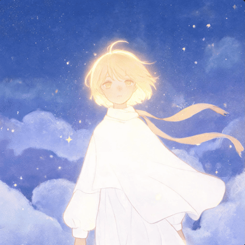
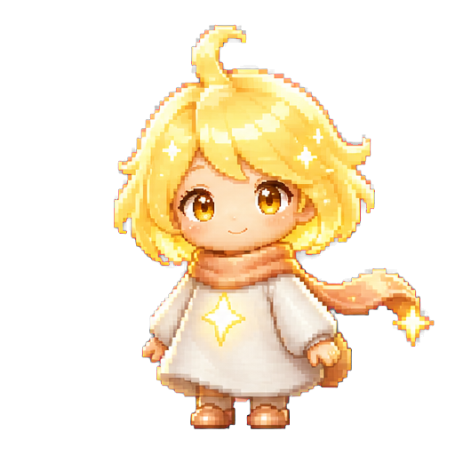

Mood Dungeon
心情副本

小灯
你说"没事"的时候，
这盏灯会替你记得
那些还没被说出来的
难过。
给青少年的情绪通关游戏。把说不出口的难过，变成可以一步步走出来的副本。
很多青少年不是没有人爱他们，而是在最需要被理解的那一刻，说不出来。
《心情副本》想在他们还没准备好向人求助之前，先给他们一个可以喘口气的地方。
《心情副本》想在他们还没准备好向人求助之前，先给他们一个可以喘口气的地方。

小灯
你说"没事"的时候，
这盏灯会替你记得
那些还没被说出来的
难过。
给青少年的情绪通关游戏。把说不出口的难过，变成可以一步步走出来的副本。
小灯只在当前浏览器里检索你主动输入的文字。她会提出几个可能的情绪，由你决定哪一个更接近。
选择一个回应，小灯会帮你看见选择背后的情绪需求。
